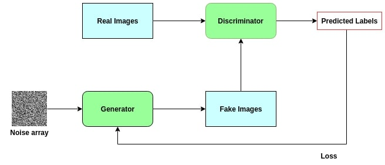

Super resolution with Deep Learning: SRGAN
The Super Resolution GAN (SRGAN) is a deep learning algorithm whose objective is to improve the quality of an image. It belongs to the family of GANs (Generative Adversarial Networks). In this article, we will first discuss the background of image super-resolution and the different deep learning algorithms used for image processing. We will then see more precisely what a GAN is and how it works, before diving into the specific architecture of SRGAN. Finally, we will explore its applications, limitations, and future directions.
- Why image super-resolution matters -
In today’s digital world, we are surrounded by images—from social media photos and surveillance videos to medical scans and satellite imagery. However, many of these images suffer from poor resolution due to compression, noise, or hardware limitations. Super-resolution aims to reconstruct high-quality images from low-resolution inputs. Traditional approaches to image enhancement included interpolation methods like bilinear or bicubic interpolation. While fast, these methods often produce blurry and unrealistic results because they cannot restore lost fine details. Deep learning, particularly CNNs and GANs, revolutionized the field by learning from vast datasets to hallucinate missing details, producing sharper and more natural-looking images.
- GANs and their functioning -
A GAN is an algorithm capable of generating or transforming images. It was introduced by Ian Goodfellow in 2014 and has since transformed AI research. GANs consist of two main components:
- Generator: Creates new images from random noise or low-resolution inputs. Its goal is to produce outputs that are indistinguishable from real images.
- Discriminator: Judges whether an image is real (from the dataset) or fake (produced by the generator). It acts as a binary classifier.
These two networks are trained simultaneously in a minimax game. The generator improves by learning to fool the discriminator, while the discriminator improves by learning to detect fakes. Over time, the generator becomes highly skilled at producing realistic images.
There are many GAN variants, each optimized for a specific use case. For instance, StyleGAN by NVIDIA generates hyper-realistic human faces. Conditional GANs (cGANs) generate images based on labels or attributes. CycleGANs perform style transfer, converting paintings to photos or horses to zebras. SRGAN is the variant specialized for super-resolution.
- SRGAN: How the algorithm works -
Introduced in 2017 by Ledig et al., SRGAN was the first framework capable of generating photo-realistic images for 4x upscaling tasks. Its innovation lies in combining adversarial learning with perceptual loss functions derived from pretrained networks.
The architecture includes three main components:
1. Generator
The generator is a deep residual network (ResNet) with multiple residual blocks. Each block includes convolutional layers, batch normalization, and Parametric ReLU activations. The goal is to upsample low-resolution inputs (e.g., 64x64) into high-resolution outputs (e.g., 256x256) while adding realistic textures and edges.
2. Discriminator
The discriminator is a CNN classifier trained to distinguish between real high-resolution images and generated ones. It provides adversarial feedback to push the generator toward realism.
3. VGG19 network
SRGAN introduces a perceptual loss based on VGG19, a pretrained CNN on ImageNet. Instead of comparing images pixel-by-pixel (which often yields blurry results), SRGAN compares feature maps extracted by VGG19. This ensures the generated image not only matches in structure but also in high-level perceptual quality.
- Loss functions in SRGAN -
The effectiveness of SRGAN comes from its loss design:
- Content loss: Based on VGG feature maps, ensures perceptual similarity to ground truth.
- Adversarial loss: Encourages generator outputs that fool the discriminator, pushing realism.
- Total loss: Weighted combination of content and adversarial loss, balancing structure with realism.
- Training SRGAN -
Training SRGAN requires:
- Dataset preparation: Pairs of low- and high-resolution images (e.g., DIV2K, ImageNet subsets).
- Pretraining: The generator is often pretrained with MSE loss for stability.
- Adversarial training: The generator and discriminator are trained alternately.
- Evaluation: Metrics include PSNR, SSIM, and human perceptual studies.
- Applications of SRGAN -
- Medical imaging: Enhancing MRI, CT, and X-ray scans for better diagnosis.
- Satellite imagery: Improving resolution for climate studies, agriculture, and defense.
- Forensics & surveillance: Depixelating blurry faces in security footage.
- Entertainment: Restoring old movies, video games, and anime to HD/4K quality.
- E-commerce: Enhancing low-quality product images for online platforms.
- Limitations and improvements -
Although powerful, SRGAN has some limitations:
- Training is unstable and requires careful tuning.
- Artifacts like ringing or checkerboard patterns may appear.
- Performance depends heavily on training data quality.
These issues led to improvements such as:
- ESRGAN: Enhanced SRGAN with Residual-in-Residual Dense Blocks, producing sharper textures.
- Real-ESRGAN: Designed for real-world low-quality images, handling noise and compression better.
- Code example (PyTorch) -
import torch
import torch.nn as nn
# Residual block for SRGAN
class ResidualBlock(nn.Module):
def __init__(self, channels):
super(ResidualBlock, self).__init__()
self.conv1 = nn.Conv2d(channels, channels, 3, stride=1, padding=1)
self.bn1 = nn.BatchNorm2d(channels)
self.prelu = nn.PReLU()
self.conv2 = nn.Conv2d(channels, channels, 3, stride=1, padding=1)
self.bn2 = nn.BatchNorm2d(channels)
def forward(self, x):
residual = self.conv1(x)
residual = self.bn1(residual)
residual = self.prelu(residual)
residual = self.conv2(residual)
residual = self.bn2(residual)
return x + residual
This snippet shows how residual blocks are implemented in the generator. Stacking multiple such blocks allows SRGAN to model complex image textures.
- The future of SRGAN and super-resolution -
The field is rapidly evolving:
- Integration with diffusion models for even higher fidelity.
- Video super-resolution to upscale entire movies in real time.
- 3D and volumetric image enhancement for AR/VR applications.
- On-device super-resolution for mobile and edge computing.
Ultimately, SRGAN and its successors are paving the way for a future where any low-quality image can be transformed into a sharp, realistic representation—breaking the barriers of hardware limitations and unlocking new possibilities in science, media, and communication.